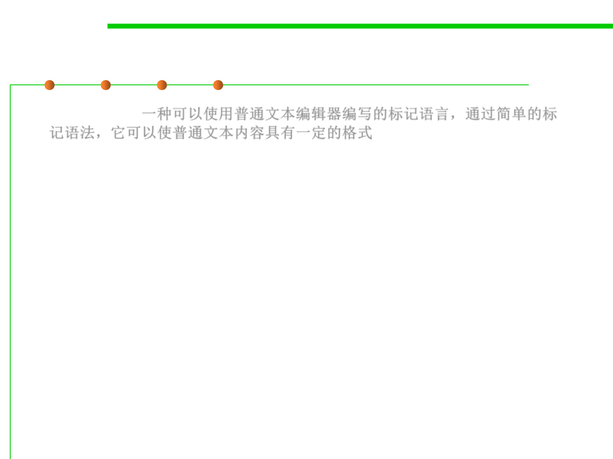

6.3 Maintainability-Oriented Construction Techniques
Markdown and HTML
▪ Markdown(一种可以使用普通文本编辑器编写的标记语言，通过简单的标
记语法，它可以使普通文本内容具有一定的格式)
This is _italic_.
▪ HTML
Here is an <i>italic</i> word.
▪ For simplicity, these HTML and Markdown grammars will only
specify italics, but other text styles are of course possible.
▪ For simplicity, we will assume the plain text between the
formatting delimiters isn’t allowed to use any formatting
punctuation, like _ or <.